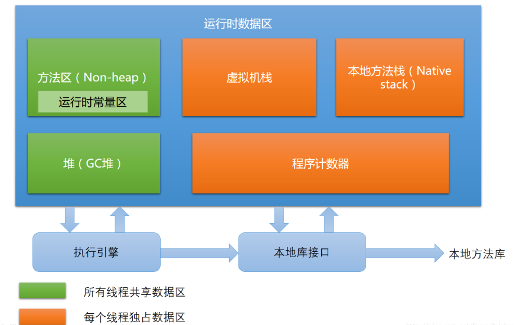

<!DOCTYPE HTML>
<html lang="">
<head><meta name="generator" content="Hexo 3.8.0">
    <!--Setting-->
    <meta charset="UTF-8">
    <meta name="viewport" content="width=device-width, user-scalable=no, initial-scale=1.0, maximum-scale=1.0, minimum-scale=1.0">
    <meta http-equiv="X-UA-Compatible" content="IE=Edge,chrome=1">
    <meta http-equiv="Cache-Control" content="no-siteapp">
    <meta http-equiv="Cache-Control" content="no-transform">
    <meta name="renderer" content="webkit|ie-comp|ie-stand">
    <meta name="apple-mobile-web-app-capable" content="杨柳潇的博客">
    <meta name="apple-mobile-web-app-status-bar-style" content="black">
    <meta name="format-detection" content="telephone=no,email=no,adress=no">
    <meta name="browsermode" content="application">
    <meta name="screen-orientation" content="portrait">
    <link rel="dns-prefetch" href="http://yangliuxiao.top">
    <!--SEO-->

    <meta name="keywords" content="Java,面试,JVM">


    <meta name="description" content="Java的优点
几款重要的JVM
运行时数据区域

Java的优点

摆脱了硬件平台的束缚，“Write once, compile anywhere”.

提供了一个相对安全的内存管理和访问机...">


<meta name="robots" content="all">
<meta name="google" content="all">
<meta name="googlebot" content="all">
<meta name="verify" content="all">

    <!--Title-->


<title>深入理解Java虚拟机（一） | 杨柳潇的博客</title>


    <link rel="alternate" href="/atom.xml" title="杨柳潇的博客" type="application/atom+xml">


    <link rel="icon" href="/favicon.jpg">

    


<link rel="stylesheet" href="/css/bootstrap.min.css?rev=3.3.7">
<link rel="stylesheet" href="/css/font-awesome.min.css?rev=4.5.0">
<link rel="stylesheet" href="/css/style.css?rev=@@hash">


    
	<div class="hide">
		<script type="text/javascript">
			var cnzz_protocol = (("https:" == document.location.protocol) ? " https://" : " http://");document.write(unescape("%3Cspan class='cnzz_stat_icon_1263868967 hide' %3E%3Cscript%20src%3D%22https%3A%2F%2Fs95.cnzz.com%2Fz_stat.php%3Fweb_id%3D1272564536%22%3E%3C%2Fscript%3E%3C/span%3E%3Cscript src='" + cnzz_protocol + "s19.cnzz.com/z_stat.php%3Fid%3D1263868967%26show%3Dpic1' type='text/javascript'%3E%3C/script%3E"));
		</script>
	</div>


    

</head>

</html>
<!--[if lte IE 8]>
<style>
    html{ font-size: 1em }
</style>
<![endif]-->
<!--[if lte IE 9]>
<div style="ie">你使用的浏览器版本过低，为了你更好的阅读体验，请更新浏览器的版本或者使用其他现代浏览器，比如Chrome、Firefox、Safari等。</div>
<![endif]-->

<body>
    <header class="main-header" style="background-image:url(/./img/background01.png)">
    <div class="main-header-box">
        <a class="header-avatar" href="/" title="Mute">
            
        </a>
        <div class="branding">
        	<!--<h2 class="text-hide">Snippet主题,从未如此简单有趣</h2>-->
            
                 
            
    	</div>
    </div>
</header>
    <nav class="main-navigation">
    <div class="container">
        <div class="row">
            <div class="col-sm-12">
                <div class="navbar-header"><span class="nav-toggle-button collapsed pull-right" data-toggle="collapse" data-target="#main-menu" id="mnav">
                    <span class="sr-only"></span>
                        <i class="fa fa-bars"></i>
                    </span>
                    <a class="navbar-brand" href="http://yangliuxiao.top">杨柳潇的博客</a>
                </div>
                <div class="collapse navbar-collapse" id="main-menu">
                    <ul class="menu">
                        
                            <li role="presentation" class="text-center">
                                <a href="/"><i class="fa "></i>Home</a>
                            </li>
                        
                            <li role="presentation" class="text-center">
                                <a href="/archives/"><i class="fa "></i>时间轴</a>
                            </li>
                        
                    </ul>
                </div>
            </div>
        </div>
    </div>
</nav>
    <section class="content-wrap">
        <div class="container">
            <div class="row">
                <main class="col-md-8 main-content m-post">
                    <p id="process"></p>
<article class="post">
    <div class="post-head">
        <h1 id="深入理解Java虚拟机（一）">
            
	            深入理解Java虚拟机（一）
            
        </h1>
        <div class="post-meta">
    
        <span class="categories-meta fa-wrap">
            <i class="fa fa-folder-open-o"></i>
            <a class="category-link" href="/categories/JVM/">JVM</a>
        </span>
    

    
        <span class="fa-wrap">
            <i class="fa fa-tags"></i>
            <span class="tags-meta">
                
                    <a class="tag-link" href="/tags/JVM/">JVM</a> <a class="tag-link" href="/tags/Java/">Java</a> <a class="tag-link" href="/tags/面试/">面试</a>
                
            </span>
        </span>
    

    
        
        <span class="fa-wrap">
            <i class="fa fa-clock-o"></i>
            <span class="date-meta">2018/05/25</span>
        </span>
        
    
</div>
            
            
    </div>
    
    <div class="post-body post-content">
        <p><a href="#Java的优点">Java的优点</a></p>
<p><a href="#几款重要的JVM">几款重要的JVM</a></p>
<p><a href="#运行时数据区域">运行时数据区域</a></p>
<hr>
<h4 id="Java的优点"><a href="#Java的优点" class="headerlink" title="Java的优点"></a>Java的优点</h4><blockquote>
<ol>
<li><p>摆脱了硬件平台的束缚，“Write once, compile anywhere”.</p>
</li>
<li><p>提供了一个相对安全的内存管理和访问机制。</p>
</li>
<li><p>热点代码检测和运行时编译及优化.</p>
</li>
<li><p>有一套完整的应用程序接口，以及无数的第三方库。</p>
</li>
</ol>
</blockquote>
<p><strong>JDK</strong>（Java Development Kit）：支持Java程序开发的最小环境，包括Java程序设计语言、Java虚拟机、Java API类库</p>
<p><strong>JRE</strong>（Java Runtime Environment）:支持Java程序运行的标准环境，包括Java API 类库中的JavaSE API子集、Java虚拟机</p>
<hr>
<h4 id="几款重要的JVM"><a href="#几款重要的JVM" class="headerlink" title="几款重要的JVM"></a>几款重要的JVM</h4><p> <strong>1. Sun Classic</strong>(世界上第一款商用Java虚拟机)</p>
<blockquote>
<p>只能使用纯解释器方式来执行Java代码（解释器和编译器不能配合工作）</p>
<p>也就是说若要使用编译器执行，则编译器要对每一个方法，每一行代码都进行编译，而无论它们执行的频率是否值得编译。导致<strong>无法使用编译优化技术</strong>，造成了<strong>Java语言很慢</strong>的最初印象</p>
</blockquote>
<p> <strong>2. Exact VM</strong></p>
<blockquote>
<p>因使用<strong>准确式内存管理</strong>（Exact Memory Management）而得名（即VM中可以知道内存中某个位置的数据具体是什么类型）</p>
<p>已经具备现代高性能处理器的雏形，如两级<strong>即时编译器、编译器与解释器混合工作模式</strong>等。</p>
</blockquote>
<p> <strong>3. Sun HotSpot VM</strong>（目前使用范围最广的Java虚拟机）</p>
<blockquote>
<p>准确式内存管理</p>
<p>HotSpot—-<strong>热点代码检测技术</strong>（通过执行计数器找出具有编译价值的代码）</p>
<p>编译器和解释器恰当地协同工作</p>
</blockquote>
<hr>
<h4 id="运行时数据区域"><a href="#运行时数据区域" class="headerlink" title="运行时数据区域"></a>运行时数据区域</h4><p>Java虚拟机在执行Java程序的过程中会把它所管理的内存划分为若干个不同的数据区域。这些区域都有各自的用途，以及创建和销毁的时间。有的区域随着虚拟机进程的启动而存在，有些区域则依赖用户线程的启动和结束而建立和销毁。</p>
<p></p>
<p> <strong>1. 程序计数器</strong>：当前线程所执行的字节码的行号指示器</p>
<blockquote>
<ol>
<li><p><strong>线程私有</strong>（生命周期与线程相同）</p>
</li>
<li><p>字节码解释器工作时就是通过改变这个计数器的值来选取下一条需执行的字节码指令</p>
</li>
<li><p>此内存区域是唯一一个在Java虚拟机规范中没有规定任何OutOfMemoryError情况的区域</p>
</li>
</ol>
</blockquote>
<p> <strong>2. Java虚拟机栈</strong></p>
<blockquote>
<ol>
<li><p><strong>线程私有</strong>（生命周期与线程相同）</p>
</li>
<li><p>是<strong>Java方法</strong>执行的内存模型</p>
</li>
<li><p>每个方法执行的同时都会创建一个<strong>栈帧</strong>用于存储<strong>局部变量表、操作数栈、动态链接、方法出口</strong>等。<strong>每一个方法从调用直至执行完成的过程，就对应一个栈帧在虚拟机栈中入栈到出栈的过程</strong></p>
</li>
</ol>
<p><strong>局部变量表</strong></p>
<blockquote>
<p>存放<strong>基本数据类型</strong>（byte、boolean、char、short、int、float、long、double），<strong>对象引用</strong>（reference类型），<strong>returnAddress类型</strong>（指向一条字节码指令的地址）</p>
</blockquote>
<ol>
<li><p>在编译期间完成分配，方法运行期间<strong>不会改变大小</strong></p>
</li>
<li><p>当线程请求栈深大于VM允许栈深，报<strong>stackOverFlowError</strong>错误；当VM栈扩展时无法申请到足够内存，报<strong>outOfMemoryError</strong>.</p>
</li>
</ol>
</blockquote>
<p> <strong>3. 本地方法栈.</strong></p>
<blockquote>
<p>与虚拟机栈非常相似，区别在于VM栈为VM执行Java方法（也就是字节码）服务，而本地方法栈则为VM使用到的Native方法服务</p>
</blockquote>
<p> <strong>4. Java堆</strong>：对大多数应用来说，Java堆是Java VM所管理的内存中<strong>最大</strong>的一块。</p>
<blockquote>
<ol>
<li><p><strong>所有线程共享</strong>，在虚拟机启动时创建</p>
</li>
<li><p>唯一的目的就是<strong>存放对象实例</strong></p>
</li>
<li><p>是<strong>垃圾搜集器</strong>管理的主要区域</p>
</li>
<li><p>Java堆可以处于物理上不连续的内存空间中，<strong>逻辑是连续的即可</strong></p>
</li>
</ol>
</blockquote>
<p> <strong>5. 方法区</strong></p>
<blockquote>
<ol>
<li><p><strong>线程共享</strong></p>
</li>
<li><p>用于存储已被虚拟机<strong>加载的类信息</strong>（<strong>存放Class相关信息：类名、访问修饰符、常量池……</strong>）、<strong>常量、静态变量、即时编译器编译后的代码</strong>等。</p>
</li>
<li><p>不需连续内存，可固定大小也可扩展</p>
</li>
<li><p>对方法区的<strong>内存回收目标主要是针对常量池的回收和对类型的卸载</strong></p>
</li>
<li><p>运行时常量池：</p>
</li>
</ol>
<blockquote>
<ol>
<li><p>是方法区的一部分，<strong>Class文件中的常量池</strong>（Class文件中除了类的版本、字段、方法、接口等描述信息外，还有一项信息就是常量池(constant pool table)，用于存放编译器生成的各种字面量(Literal)和符号引用(Symbolic References)。）将在类加载后进入方法区的运行时常量池中存放</p>
</li>
<li><p>相对于<strong>Class常量池</strong>的两个特征：①Class中的每一部分的格式都有严格规定，每一个字节用于存储哪种数据都必须符合规范上的要求，而对于运行时常量池，<strong>Java虚拟机规范没有做任何细节上的要求</strong>。②具备<strong>动态性</strong>，运行期间也可能将新的常量放入池中。（<strong>String.intern()</strong>将新的String字符串加入字符串常量池）</p>
</li>
</ol>
</blockquote>
</blockquote>

    </div>
    
    <div class="post-footer">
        <div>
            
        </div>
        <div>
            
        </div>
    </div>
</article>

<div class="article-nav prev-next-wrap clearfix">
    
        <a href="/2018/05/25/深入理解Java虚拟机（二）/" class="pre-post btn btn-default" title="深入理解Java虚拟机（二）">
            <i class="fa fa-angle-left fa-fw"></i><span class="hidden-lg">上一篇</span>
            <span class="hidden-xs">深入理解Java虚拟机（二）</span>
        </a>
    
    
        <a href="/2017/11/18/Struts2配置文件及相关技术/" class="next-post btn btn-default" title="Struts2配置文件及相关技术">
            <span class="hidden-lg">下一篇</span>
            <span class="hidden-xs">Struts2配置文件及相关技术</span><i class="fa fa-angle-right fa-fw"></i>
        </a>
    
</div>


                </main>
                
                    <aside id="article-toc" role="navigation" class="col-md-4">
    <div class="widget">
        <h3 class="title">Table of Contents</h3>
        
            <ol class="toc"><li class="toc-item toc-level-4"><a class="toc-link" href="#Java的优点"><span class="toc-text">Java的优点</span></a></li><li class="toc-item toc-level-4"><a class="toc-link" href="#几款重要的JVM"><span class="toc-text">几款重要的JVM</span></a></li><li class="toc-item toc-level-4"><a class="toc-link" href="#运行时数据区域"><span class="toc-text">运行时数据区域</span></a></li></ol>
        
    </div>
</aside>

                
            </div>
        </div>
    </section>
    <footer class="main-footer">
    <div class="container">
        <div class="row">
        </div>
    </div>
</footer>

<a id="back-to-top" class="icon-btn hide">
	<i class="fa fa-chevron-up"></i>
</a>


    <div class="copyright">
    <div class="container">
        <div class="row">
            <div class="col-sm-12">
                <div class="busuanzi">
    
</div>

            </div>
            <div class="col-sm-12">
                <span>Copyright &copy; 2017
                </span>

            </div>
        </div>
    </div>
</div>


<script src="/js/app.js?rev=@@hash"></script>

</body>
</html>